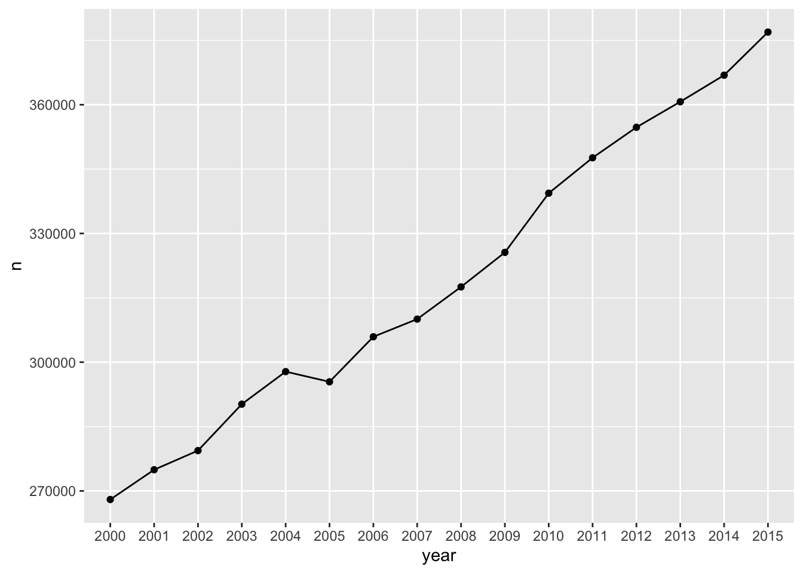
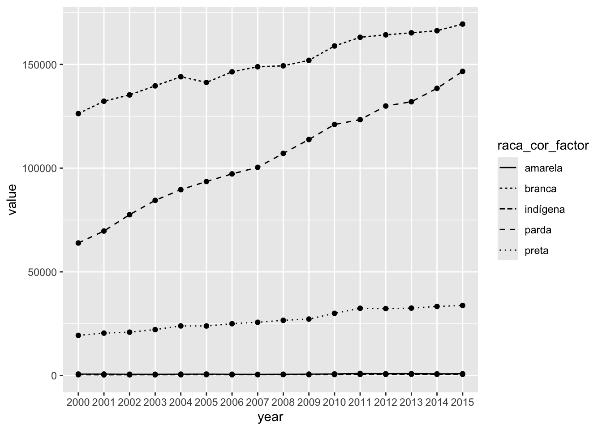
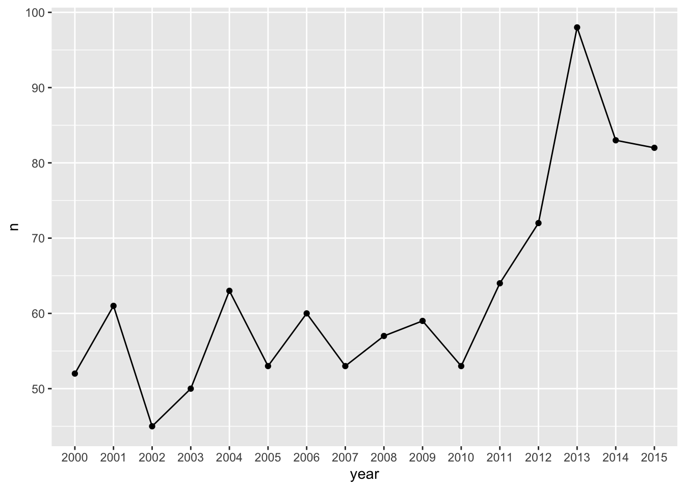
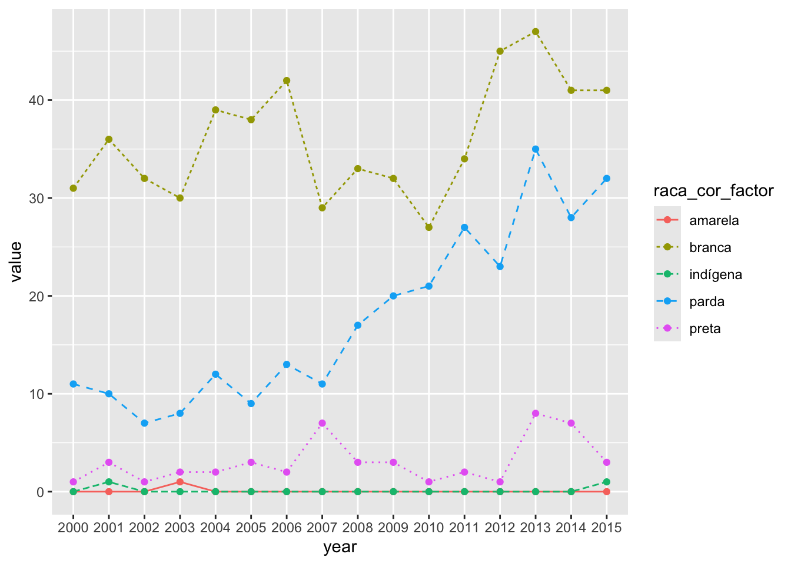
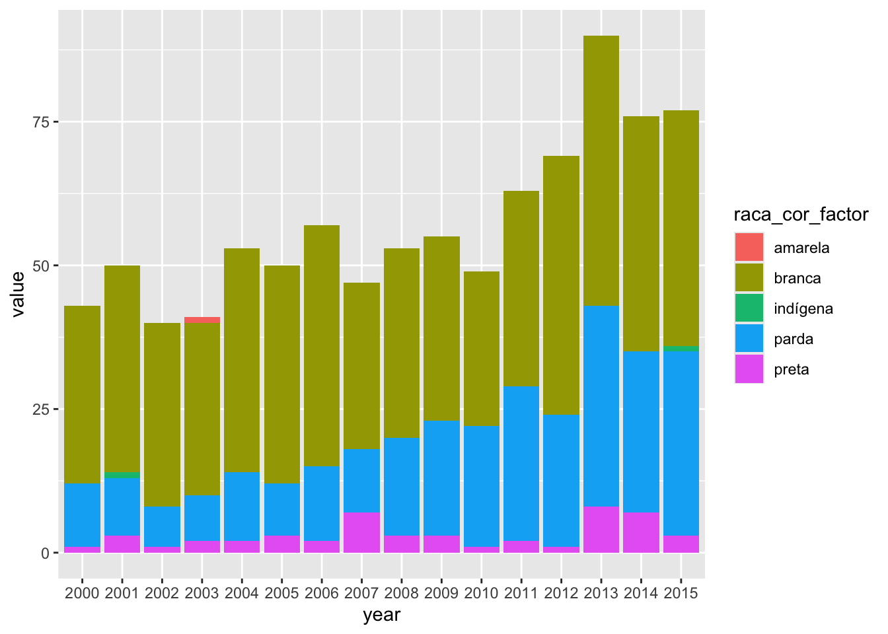
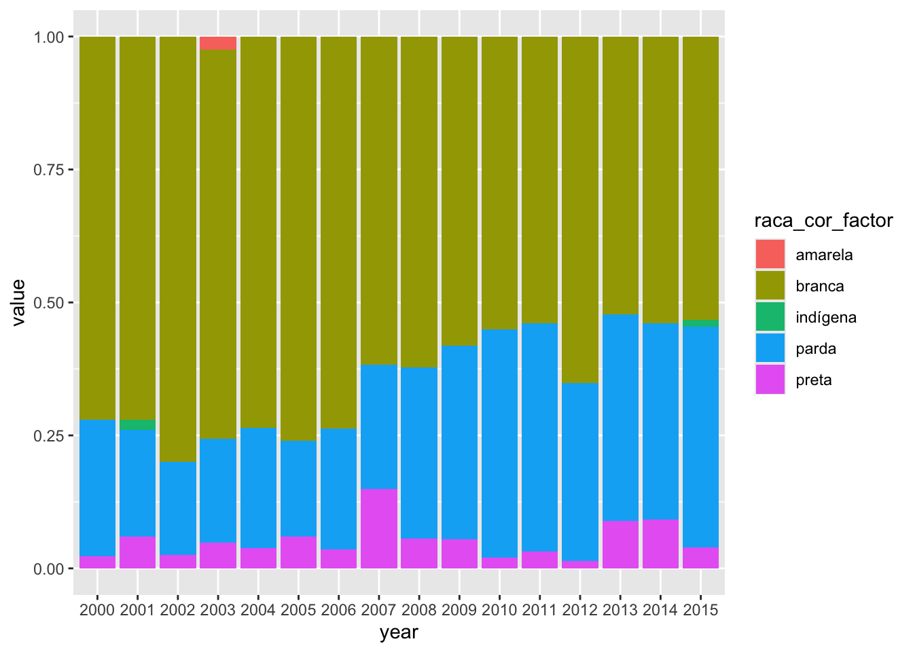

library(microdatasus)
library(dplyr)
library(tidyverse)
library(maditr)
library(kableExtra)
Download the data
dados_2000_2015_one_State_per_Region = fetch_datasus(year_start = 2000,
year_end = 2015,
uf = c("MG", "BA", "PA", "RS", "GO"),
information_system = "SIM-DO")
#saveRDS(dados_2000_2015_one_State_per_Region, "./data/dados_2000_2015_one_State_per_Region.rds")
Upload the data
start_time <- Sys.time()
dados_2000_2015_one_State_per_Region <- readRDS("./data/dados_2000_2015_one_State_per_Region.rds")
end_time <- Sys.time()
end_time - start_time## Time difference of 33.69677 secsTransforma variável DTOBITO usando função dmy criando variável (coluna) YMD em yyyy-mm-dd. Referência: https://rstudio.github.io/cheatsheets/html/lubridate.html
library(lubridate)
dados_selected <- dados_2000_2015_one_State_per_Region %>%
select(contador, RACACOR, DTOBITO, CAUSABAS, DTNASC, IDADE) %>%
mutate(YMD = dmy(dados_2000_2015_one_State_per_Region$DTOBITO))## Warning: There was 1 warning in `mutate()`.
## ℹ In argument: `YMD =
## dmy(dados_2000_2015_one_State_per_Region$DTOBITO)`.
## Caused by warning:
## ! 489 failed to parse.
library(stringr)
# Split Each Sample
dados_year <- str_split_fixed(dados_selected$YMD, "-", 3)
# Construct Vector Maintaining parts of interest
split_vector_year <- paste0(dados_year[,1])
# Add vector to DF, after column of interest
dados_appended <- add_column(dados_selected, year = split_vector_year, .after = "YMD")
dados_agregados_year <- dados_appended %>%
group_by(year) %>%
summarise(n = n())
dados_agrupados_racaCor <- dados_appended %>%
group_by(RACACOR) %>%
summarise(n = n())
dados_agregados_racaCor <- dados_appended %>%
group_by(year) %>%
group_by(RACACOR) %>%
summarise(n = n())
# dados_agregados_racaCor <- dados_appended %>%
# group_by(chr) %>%
# summarise(avg = mean(x)) %>%
# arrange(chr, .locale = "en")dados_agregados_year <- dados_agregados_year[ which(
dados_agregados_year$year != "NA"), ]
### Mortalidade Anual Total
library(ggplot2)
# Basic line plot with points
ggplot(data=dados_agregados_year, aes(x=year, y=n, group=1)) +
geom_line()+
geom_point()
dados_race_year_selcd <- dados_appended %>%
select(RACACOR, year)
dados_agrupados_racaCor <- dados_race_year_selcd %>%
group_by(RACACOR) %>%
summarise(n = n())
library(reshape2)
#use cast() to convert data frame from long to wide format
wide_dados_appended <- dcast(dados_race_year_selcd, year ~ RACACOR)## Warning in dcast(dados_race_year_selcd, year ~ RACACOR): The dcast generic in
## data.table has been passed a data.frame and will attempt to redirect to the
## relevant reshape2 method; please note that reshape2 is superseded and is no
## longer actively developed, and this redirection is now deprecated. Please do
## this redirection yourself like reshape2::dcast(dados_race_year_selcd). In the
## next version, this warning will become an error.## Using 'year' as value column. Use 'value.var' to override## Aggregation function missing: defaulting to length# wide_dados_appended <- dcast(dados_race_year_selcd, RACACOR ~ year)
# Melt the data frame
dados_appended_melted <- melt(wide_dados_appended, id.vars = "year")## Warning in melt.default(wide_dados_appended, id.vars = "year"): The melt
## generic in data.table has been passed a data.frame and will attempt to redirect
## to the relevant reshape2 method; please note that reshape2 is superseded and is
## no longer actively developed, and this redirection is now deprecated. To
## continue using melt methods from reshape2 while both libraries are attached,
## e.g. melt.list, you can prepend the namespace, i.e.
## reshape2::melt(wide_dados_appended). In the next version, this warning will
## become an error.
Obter variável raça/cor como palavras descritivas ao invés de
números.
dados_appended_melted <- dados_appended_melted %>%
dplyr::mutate(raca_cor_factor = ifelse(dados_appended_melted$variable == "1", "branca",
ifelse(dados_appended_melted$variable == "2", "preta",
ifelse(dados_appended_melted$variable == "3", "amarela",
ifelse(dados_appended_melted$variable == "4", "parda",
ifelse(dados_appended_melted$variable == "5", "indígena",
ifelse(dados_appended_melted$variable == "9", "ignorado","0")))))))
Remove NA in year
dados_appended_melted <- dados_appended_melted[ which(
dados_appended_melted$year != "NA"), ]
Remove 0 in raça/cor
dados_appended_melted <- dados_appended_melted[ which(
dados_appended_melted$raca_cor_factor != "0"), ]
Visualizar plot
ggplot(dados_appended_melted, aes(x=year, y=value, group=raca_cor_factor)) +
geom_line(aes(linetype=raca_cor_factor))+
geom_point()
dados_nb <- dados_appended[ which(
dados_appended$CAUSABAS == "C749"), ]
dim(dados_nb)## [1] 1005 8
dados_agregados_nb_year <- dados_nb %>%
group_by(year) %>%
summarise(n = n())
ggplot(data=dados_agregados_nb_year, aes(x=year, y=n, group=1)) +
geom_line()+
geom_point()
dados_nb_race_year_selcd <- dados_nb %>%
select(RACACOR, year)
# dados_nb_race_2013_selcd <- dados_estados_nb_2013 %>%
# select(RACACOR, CAUSABAS)
use cast() to convert data frame from long to wide format
library(reshape2)
wide_dados_nb_appended <- dcast(dados_nb_race_year_selcd, year ~ RACACOR)## Warning in dcast(dados_nb_race_year_selcd, year ~ RACACOR): The dcast generic
## in data.table has been passed a data.frame and will attempt to redirect to the
## relevant reshape2 method; please note that reshape2 is superseded and is no
## longer actively developed, and this redirection is now deprecated. Please do
## this redirection yourself like reshape2::dcast(dados_nb_race_year_selcd). In
## the next version, this warning will become an error.## Using 'year' as value column. Use 'value.var' to override## Aggregation function missing: defaulting to length
Melt the data frame
dados_nb_appended_melted <- melt(wide_dados_nb_appended, id.vars = "year")## Warning in melt.default(wide_dados_nb_appended, id.vars = "year"): The melt
## generic in data.table has been passed a data.frame and will attempt to redirect
## to the relevant reshape2 method; please note that reshape2 is superseded and is
## no longer actively developed, and this redirection is now deprecated. To
## continue using melt methods from reshape2 while both libraries are attached,
## e.g. melt.list, you can prepend the namespace, i.e.
## reshape2::melt(wide_dados_nb_appended). In the next version, this warning will
## become an error.
Obter variável raça/cor como palavras descritivas ao invés de números.
dados_nb_appended_melted <- dados_nb_appended_melted %>%
dplyr::mutate(raca_cor_factor = ifelse(dados_nb_appended_melted$variable == "1", "branca",
ifelse(dados_nb_appended_melted$variable == "2", "preta",
ifelse(dados_nb_appended_melted$variable == "3", "amarela",
ifelse(dados_nb_appended_melted$variable == "4", "parda",
ifelse(dados_nb_appended_melted$variable == "5", "indígena",
ifelse(dados_nb_appended_melted$variable == "9", "ignorado","0")))))))
Remove NA in year
dados_nb_appended_melted <- dados_nb_appended_melted[ which(
dados_nb_appended_melted$year != "NA"), ]
Remove 0 in raça/cor
dados_nb_appended_melted <- dados_nb_appended_melted[ which(
dados_nb_appended_melted$raca_cor_factor != "0"), ]
Visualizar plot
ggplot(dados_nb_appended_melted, aes(x=year, y=value, group=raca_cor_factor, color=raca_cor_factor)) +
geom_line(aes(linetype=raca_cor_factor))+
geom_point()
Stacked Graph
ggplot(dados_nb_appended_melted, aes(fill=raca_cor_factor, y=value, x=year)) +
geom_bar(position="stack", stat="identity")
Stacked + Graph
ggplot(dados_nb_appended_melted, aes(fill=raca_cor_factor, y=value, x=year)) +
geom_bar(position="fill", stat="identity")